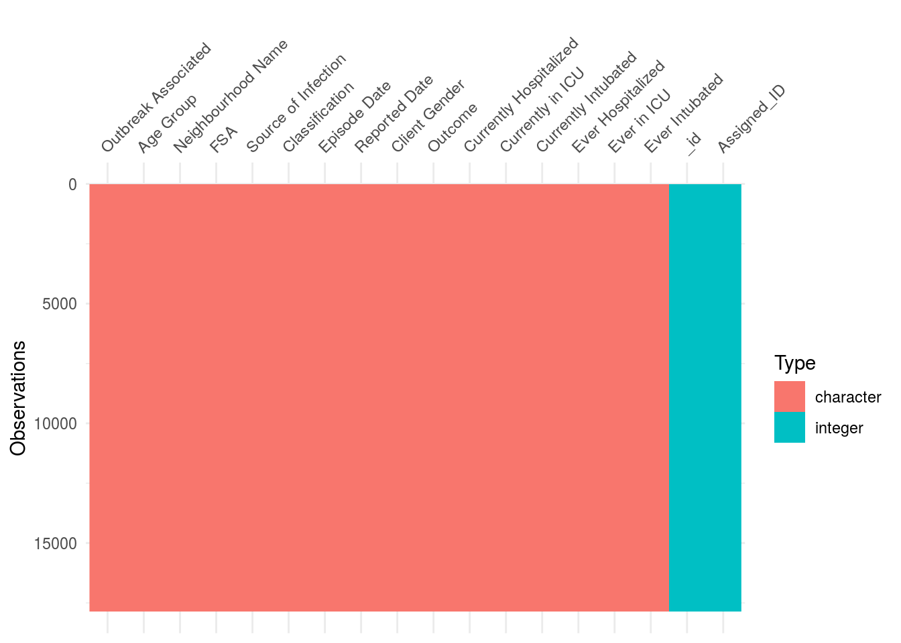
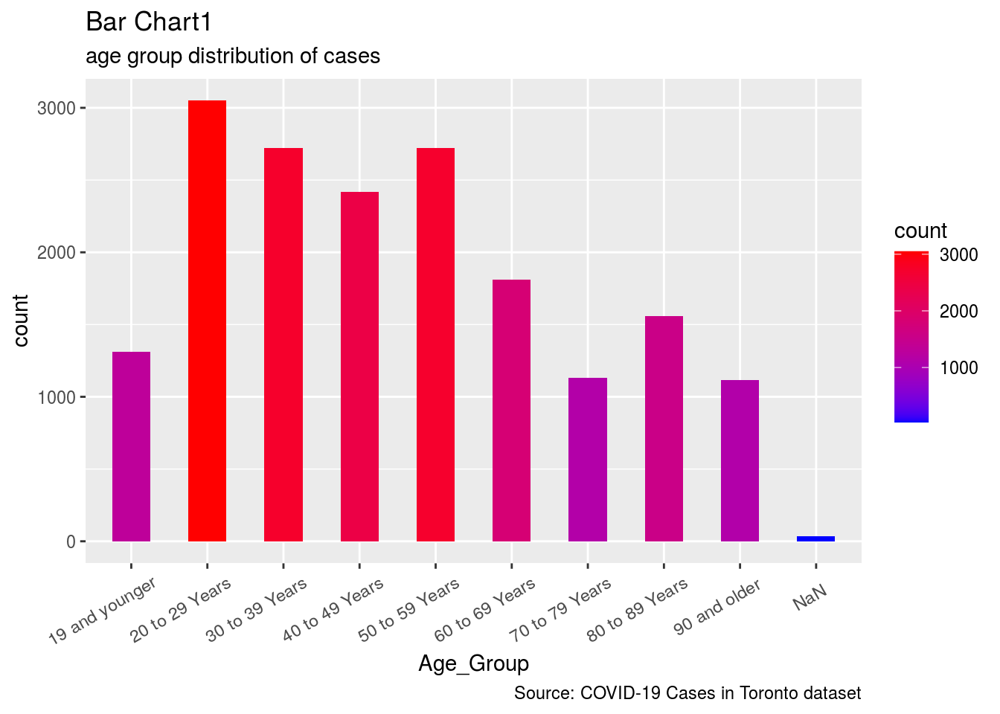
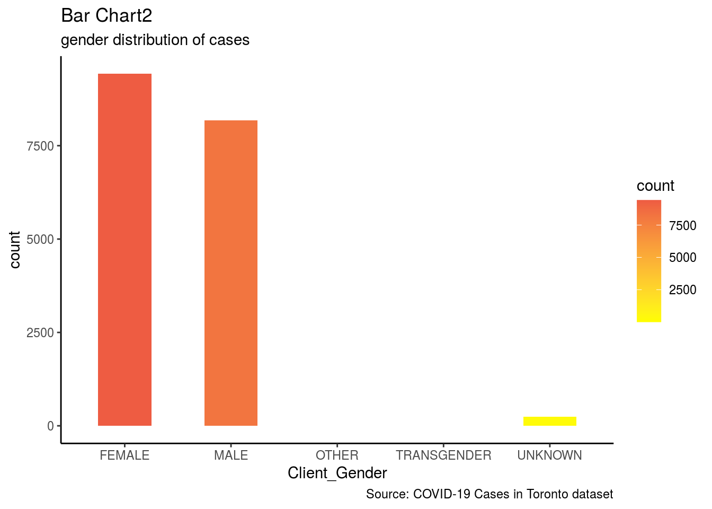
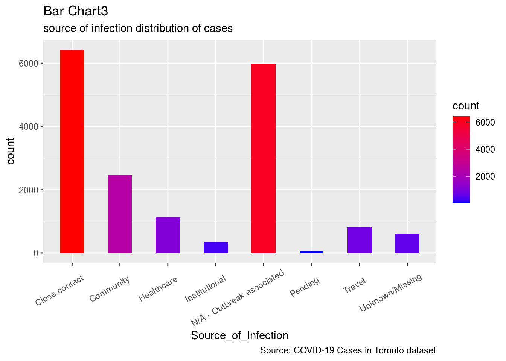
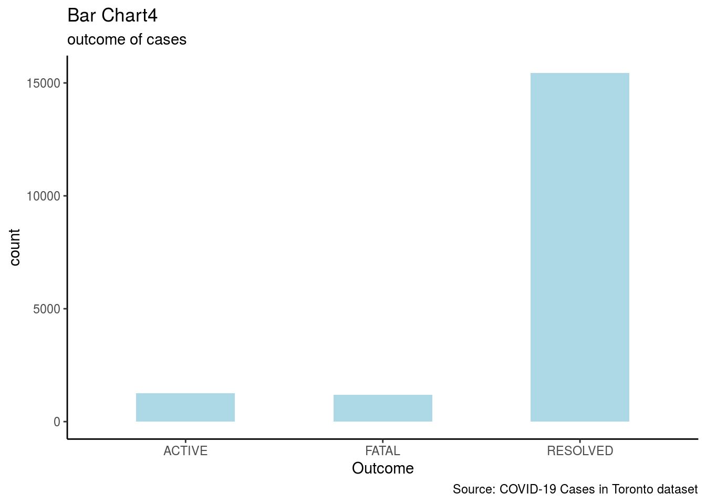

Code and data supporting this analysis is available at: “https://github.com/zhoufanx/STA304-Assignment1”.
We use R (R Core Team 2020) and packages tidyverse (Wickham et al. 2019), visdat (Tierney 2017), labelled (Larmarange 2020), opendatatoronto (Gelfand 2020), dplyr (Wickham et al. 2020), qwraps2 (DeWitt 2020) for this analysis.
Abstract:
“We investigate the data about COVID-19 Cases in Toronto. By analyzing, results showed that age group, gender and source of infection distribution of cases and the out come of these Cases. These results are important because COVID-19 has become a common human problem this year, and our analysis provides more information to the public.”
Introduction
At present, Novel Coronavirus, which is also called COVID-19, is spreading in more than 100 countries and regions around the world, and the number of cases exceeds 100,000. The epidemic trend of COVID-19 obviously shows that it is becoming a pandemic. How to control the spread of the epidemic becomes a common problem globally. Toronto is facing the same problem, on January 23, the first identified case of COVID-19 in Canada was admitted to Sunnybrook Health Sciences Center in Toronto.(Tuite et al. 2020) We analyzed the data about COVID-19 cases in Toronto and found that there are some characteristics in these cases.
In our analysis, we analyzed the data set of COVID-19 Cases in Toronto which is the source from opendatatoronto package. We looked at variables which represent age group, source of infection, outcome and gender of these COVID-19 cases. We observed that the distribution of these cases differs in different age group, different gender and different source of infection.
We compared different cases in terms of their age, gender and their source of infection and we found that the young people are more likely to be infected. Also, among the cases of different genders, the proportion of women is higher than that of men. At the same time, most of the infection cases come from close contact and outbreak associated. However, we did not look at other variables like hospital course or Cases in ICU. In addition, we did not have the age distribution of fatal cases. These factors may show the public more detailed information about this COVID-19 virus. Future work should be targeted at more influencing factors and case status.
Data discussion
The COVID-19 cases in Toronto data set contains demographic, geographic, and severity information about thses cases and collect all confirmed and probable cases reported to Toronto Public Health. The data collection start from the first case found in January 2020. This data set combines data from the provincial communicable disease reporting system (iPHIS) and Toronto’s custom COVID-19 case management system (CORES) into a complete report. However, there is a limitation to this data. For the purpose of timeliness and accuracy, this data will be completely refreshed and overwritten each week (Gelfand 2020).
There are 18 variables and 17872 observations in this data set and their values are listed in the table below:
## tibble [17,872 × 18] (S3: tbl_df/tbl/data.frame)
## $ _id : int [1:17872] 143647 143648 143649 143650 143651 ...
## $ Assigned_ID : int [1:17872] 1 2 3 4 5 ...
## $ Outbreak Associated : chr [1:17872] "Sporadic" "Sporadic" ...
## $ Age Group : chr [1:17872] "50 to 59 Years" "50 to 59 Years" ...
## $ Neighbourhood Name : chr [1:17872] "Willowdale East" "Willowdale East" ...
## $ FSA : chr [1:17872] "M2N" "M2N" ...
## $ Source of Infection : chr [1:17872] "Travel" "Travel" ...
## $ Classification : chr [1:17872] "CONFIRMED" "CONFIRMED" ...
## $ Episode Date : chr [1:17872] "2020-01-22" "2020-01-21" ...
## $ Reported Date : chr [1:17872] "2020-01-23" "2020-01-23" ...
## $ Client Gender : chr [1:17872] "FEMALE" "MALE" ...
## $ Outcome : chr [1:17872] "RESOLVED" "RESOLVED" ...
## $ Currently Hospitalized: chr [1:17872] "No" "No" ...
## $ Currently in ICU : chr [1:17872] "No" "No" ...
## $ Currently Intubated : chr [1:17872] "No" "No" ...
## $ Ever Hospitalized : chr [1:17872] "No" "Yes" ...
## $ Ever in ICU : chr [1:17872] "No" "No" ...
## $ Ever Intubated : chr [1:17872] "No" "No" ...Below is a graph showing the type pattern of these 18 variables. From the graph we can see that all of variables have valid values, it means that there is no missing value.
 All of variable names are shown below, we will choose Age_group, Source_of_Infection, Outcome and Client_Gender to analyze age, source if infection, outcome of cases and gender seprately.
## [1] "_id" "Assigned_ID" "Outbreak_Associated"
## [4] "Age_Group" "Neighbourhood_Name" "FSA"
## [7] "Source_of_Infection" "Classification" "Episode_Date"
## [10] "Reported_Date" "Client_Gender" "Outcome"
## [13] "Currently_Hospitalized" "Currently_in_ICU" "Currently_Intubated"
## [16] "Ever_Hospitalized" "Ever_in_ICU" "Ever_Intubated"graphs
There are 4 bar charts below:

  
Graph discussion
The first bar chart shows that the age group distribution of cases, we found that the age groups of 20-59 years are the main proportion of cases. It means that young and middle-aged people are more likely to be infected.
The second bar chat shows that the gender distribution of cases. The gender of main cases are male and female. The number of infected women is higher than the number of infected men. However, we can not conclude that women is more likely to be infected, since we can see the difference is not much big. It needs more data and more examinations to find out the relationship between gender and COVID-19 cases.
The third bar chart provides information about the source of infection for each cases. From the graph, we can see that the most people are infected because of close contact and outbreak associated. In other words, these two sources are the main cause of infection.The public should avoid doing this to prevent infection.
The lase bar chart is about the outcome of these cases. We can find that 84% cases are resolved, only few cases are still active. The death rate of all cases is 6.6%. The public should actively face the epidemic so that they can be treated more effectively.
Weaknesses and next steps
My weaknesses:
In gender distribution of cases, the gender of some cases is unknown, which may cause the loss of information so that we may get a biased result.
There are some other variables like hospital course or cases in ICU may also provide useful information for the public and it may also allow us to draw more accurate conclusions about the COVID-19 cases.
we did not have the age distribution of fatal cases. It can help us better analyze the harm of the epidemic so that medical institutions may provide better treatment options.
Next steps:
Investigate more variables of cases.
Collect more numeric related data to build statistical model for analysis.
Make up for those missing values so that we can get a more accurate result.
References
DeWitt, Peter. 2020. Qwraps2: Quick Wraps 2. https://github.com/dewittpe/qwraps2/.
Gelfand, Sharla. 2020. Opendatatoronto: Access the City of Toronto Open Data Portal.
Larmarange, Joseph. 2020. Labelled: Manipulating Labelled Data. http://larmarange.github.io/labelled/.
R Core Team. 2020. R: A Language and Environment for Statistical Computing. Vienna, Austria: R Foundation for Statistical Computing. https://www.R-project.org/.
Tierney, Nicholas. 2017. “Visdat: Visualising Whole Data Frames.” JOSS 2 (16): 355. https://doi.org/10.21105/joss.00355.
Tuite, Ashleigh R, Isaac I Bogoch, Ryan Sherbo, Alexander Watts, David Fisman, and Kamran Khan. 2020. “Estimation of Coronavirus Disease 2019 (Covid-19) Burden and Potential for International Dissemination of Infection from Iran.” Annals of Internal Medicine 172 (10): 699–701.
Wickham, Hadley, Mara Averick, Jennifer Bryan, Winston Chang, Lucy D’Agostino McGowan, Romain François, Garrett Grolemund, et al. 2019. “Welcome to the tidyverse.” Journal of Open Source Software 4 (43): 1686. https://doi.org/10.21105/joss.01686.
Wickham, Hadley, Romain François, Lionel Henry, and Kirill Müller. 2020. Dplyr: A Grammar of Data Manipulation.